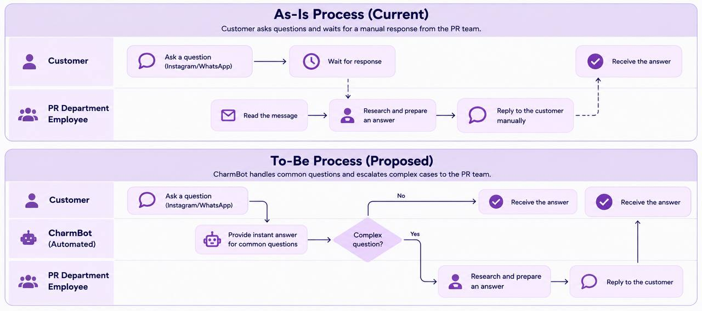

Business Analysis & Process Improvement
OhMyCharmz – Business Process Redesign
An academic business process improvement project focused on analyzing and redesigning customer engagement operations for OhMyCharmz.
Evaluated existing processes using a Process Portfolio Diagram, identified inefficiencies, and developed As-Is and To-Be process models.
The proposed redesign introduced CharmBot automation to answer common customer inquiries and escalate complex requests to employees.
Before: 22.5%
Proposed: 53.5%
Projected cycle time efficiency based on the academic analysis. The process diagram is a simplified illustration.